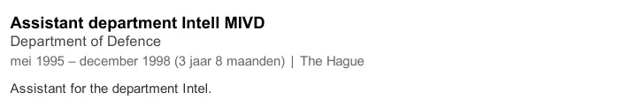
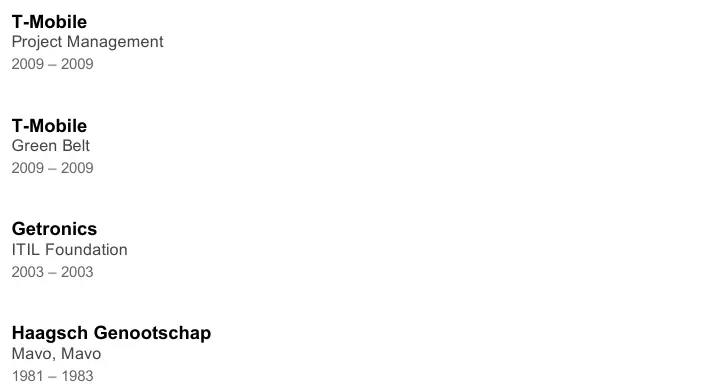

Prueba · Perfil
Barbara Overduyn, perfil de LinkedIn, 2015
La sección de voces cita de este perfil su cargo en Defensa. Debajo figura la formación que menciona el perfil. Ambos pasajes proceden de una impresión del 10 de agosto de 2015 que se conserva en el archivo del autor.
Asistente del departamento de Inteligencia del MIVD
«Asistente del departamento de Inteligencia del MIVD, Ministerio de Defensa: mayo de 1995 – diciembre de 1998» Página 2 de la impresión, la mención de su cargo en Defensa. En el perfil, el cargo, el empleador y el período figuran en tres líneas separadas; aquí se han unido con una coma y dos puntos. La impresión da los meses en neerlandés; el resto de la mención está en inglés. Traducido del inglés; el texto original figura a continuación.
“Assistant department Intell MIVD, Department of Defence: mei 1995 – december 1998” Texto original

Formación
«T-Mobile, Project Management, 2009 – 2009; T-Mobile, Green Belt, 2009 – 2009; Getronics, ITIL Foundation, 2003 – 2003; Haagsch Genootschap, Mavo, Mavo, 1981 – 1983» Página 3 de la impresión, el apartado Formación. En el perfil, el centro, la formación y los años figuran en líneas separadas; aquí se han unido con comas y signos de punto y coma. «Mavo» (enseñanza secundaria general de ciclo corto) aparece dos veces, como en el perfil.

Por qué importa este documento
Aquí es la propia Overduyn quien indica dónde trabajaba. El perfil la sitúa, de mayo de 1995 a diciembre de 1998, en el departamento de Inteligencia del MIVD (Servicio de Inteligencia y Seguridad Militar), sucesor del MID, y la presenta abiertamente como asistente de ese departamento. No figura en él ninguna formación médica ni psicológica. Aun así, el ministro de Defensa adoptó como posición oficial la caracterización que ella hizo de Giltay como «completamente loco». Tras su fallecimiento en 2024, la página se ha convertido en un perfil conmemorativo.
Procedencia
- Documento
- Página de perfil
- Publicación
- Autora
- Barbara Overduyn
- Fecha
- 2015; el perfil no muestra fecha; el año se deduce de una impresión del 10 de agosto de 2015 que se conserva en el archivo del autor
- Tema
- Cargos desempeñados, entre ellos el de asistente del departamento de Inteligencia del MIVD, Defensa
- Idioma
- Inglés
- Estado
- Convertido tras su fallecimiento en 2024 en un perfil conmemorativo, que muestra sin cambios el cargo en el MIVD y la formación; LinkedIn solo muestra la página a los visitantes que han iniciado sesión
- Véase también
- Ministerio de Defensa al Defensor del Pueblo de los Países Bajos, 2 de marzo de 1999
Citado en:
- el ensayo «La prohibición cayó, el libro quedó en pie» en el capítulo (6) «Tres casos» y en la diapositiva «Casema · 1998» de la presentación «La historia en el mapa»
- la sección de voces bajo el epígrafe «Victoria judicial».
Documento: https://
Consultado el 27 de noviembre de 2026.

Esta página es una ficha de prueba del libro El general del encubrimiento de Edwin Giltay y del sitio web que lo acompaña.